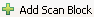
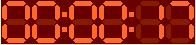
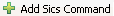

Use the Design tab to create the scan tasks.
Input the sample name and sample description in the Header Information Block in the Design tab, as shown in Figure 2.2, “Header Information”. This information will be used to label your sample in the NeXus data file
To add more scans, click on the button . A new scan widget will show up at the bottom of the Design tab. The new scan is by default the same type as the one above it.
To select the scan type, click on the drop down menu button . A list of scan types will show up, as seen in Figure 2.3, “Scan Types”. Simply choose the one you need, then the task block will change to the selected type. Please be careful of changing the type, because once you changed the type of a scan block, the editing previously done in this block will get lost. You will have a blank block in a newly selected type.
To use the Design tab to create a scan, you need to learn the meaning of the following arguments.
variable : the scan variable. It is an instrument component, which can be a motor or an sample environment controller e.g., temperature controller.
start : the start value for the scan variable.
finish : the finish value for the scan variable.
points : the total number of points in the scan.
mode : the histogram memory mode. Available options are, time and count. If you set the mode to time, the histogram server will stop when the acquisition time reaches the number of seconds set with the preset argument. If you set the mode to count, the histogram server will stop when the beam monitor counts reaches the number which is set by the preset argument.
preset : the acquisition duration at each scan point, this is in seconds if the mode is time, or counts if the mode is count.
A one-dimensional scan means only one variable is changed in the scan. A graphical description of a one-dimensional scan is in Figure 2.4, “Icon of One-Dimensional Scan”
Use the Multi-dimensional Scan block in the Design tab for this type of scan. For example in Figure 2.5, “One-Dimensional Scan”, the scan will perform like this: drive sx motor to positions, 0, 1, 2 and 3. At each position, do a histogram memory acquisition for 120 seconds. The single_file choice helps to save all the data records into the same file. If you choose multiple_files option, each data record will be saved into a separate file.
The multi-dimensional scan means more than one variable is changed in the scan. The way of these variables get changed is in a matrix way. A graphical description of such scan is shown in Figure 2.6, “Icon of Two-Dimensional Scan”, which is a two-dimensional special case.
Use the Multi-dimensional Scan block in the Design tab to setup this scan. For example in Figure 2.7, “Multi-Dimensional Scan”, it will drive sx and sy motors to the following coordinate positions, (0, 0.1), (0, 0.2), (0, 0.3), (1, 0.1) ..., (3, 0.3), totally 12 positions. At each position, do a histogram memory acquisition for 120 seconds. There are totally 12 data records will be generated. If you choose the single_file option, all data will be saved into the same file. If you choose the multiple_files option at the line for sx, there will be 4 files generated. Each file will contain 3 data records. If you choose the multiple_files option at the line for sy, there will be 12 records generated, with 1 data record in each file.
An advanced multi-dimensional scan is a scan that has one or more dimensions. And in each of the dimensions, you can change more than one variable. Use the Advanced Multi-dimensional Scan block in the Design tab to setup this scan. A graphical description of this scan is shown in Figure 2.8, “Icon of Advanced Multi_Dimensional Scan”.
For example in Figure 2.9, “Advanced Multi-Dimensional Scan”, the scan has two dimensions. In the first dimension, it moves motor sx and sy at the same time for each scan point. These coordinates are (0, 0.1), (1, 0.2), (2, 0.3) and (3, 0.4). For each coordinate of these positions, it will do a single dimensional scan on som. The total scan positions in this example is 44. If you choose the single_file option, all data will be saved into the same file. If you choose the multiple_files option at dimension 0, there will be 4 files generated. Each file will contain 11 data records. If you choose the multiple_files option at dimension 1, there will be 44 records generated, with 1 data record in each file.
The Arbitrary Scan is a scan that you can change arbitrary variable in the instrument. A graphical description of such scan is shown in Figure 2.10, “Icon of Arbitrary Scan”.
You need to define each position separately. For example, there are 3 scan positions. In each position, you change arbitrary parameters.
To run the scan, change to the Run interface. To do so, click on the Run tab at the bottom of the Design tab, see Figure 2.12, “Switch to Run Interface”. You will get Run interface. More information on this interface is provided later in this chapter. To run the script, simply click on the Run button.
Once you click on the Run button, the status bar on top of the Run block will change colour and show . Meanwhile the timer at the top right will start, for example, . When one line of the script gets processed, the colour of that line is changed to yellow. When the script processing is complete, the status label becomes and the timer stops.
To view scan data and data reduction result, please use the Kowari Analysis Window. If the analysis application window is open, it will pick up the newly generated NeXus data and load it into the File Management. To run the analysis algorithm, simply click on the file. The algorithm will start processing and the results will get shown in the plotting area. For more information about data analysis, please read Chapter 3, Data Analysis Window.
To add SICS command block, click on the button . An empty SICS command block will appear. To add new commands in the block, click on the button. As shown in Figure 2.13, “SICS Command Block”, there are two types of commands, the Drivable command and Script command.
Use Drivable command to move a motor to certain position. Please select the motor name in the drop down list, and set the target position value.
Use Script command - to add SICS Tcl commands. You can add as many as possible lines of Tcl code to the text box.
Click on the button, a drop down menu pops up, as show in Figure 2.14, “Command Drop-down Menu”. You can use this menu to change the type of the command, delete it, or move it.